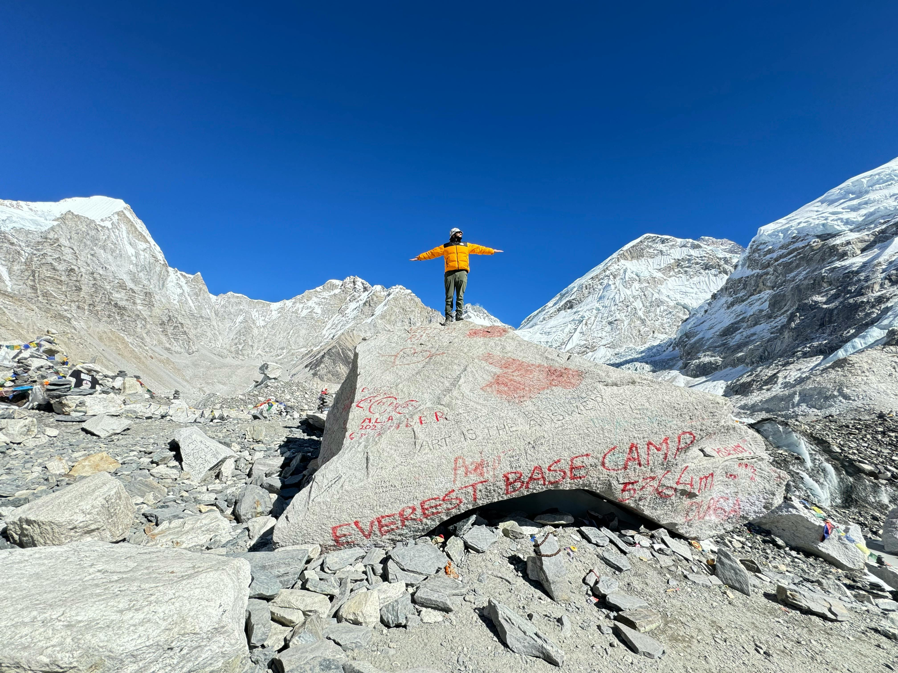
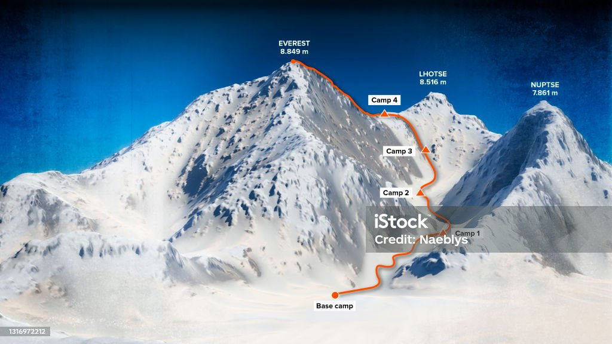

ASCENCIÓN
El monte Everest atrae a muchos escaladores, algunos de ellos montañeros altamente experimentados. Existen dos rutas de ascenso principales: una se acerca a la cumbre desde el sureste en Nepal (conocida como la ruta estándar) y la otra por el norte en el Tíbet. Aunque la ruta estándar no plantea retos técnicos considerables en escalada, el Everest presenta peligros tales como el mal de altura, clima y viento; así como riesgos significativos como avalanchas y el cruce por la cascada de hielo de Khumbu. Hasta el 2016, permanecen en la montaña cerca de 200 cadáveres, algunos de los cuales sirven como puntos de referencia

¿PORQUE SE LLAMA ASI?
En los países del occidente conocemos a esta montaña como el “Everest”, aunque al estar situado en la frontera entre China y Nepal tiene nombres diferentes, dependiendo del país. En China se le llama Zhūmùlǎngmǎ Fēng, en Nepal Sagarmāthā (“frente del cielo”) y en el Tíbet, Chomolungma (“Diosa Madre de la montaña”). El nombre Everest se puso en honor a George Everest, un geógrafo y topógrafo británico que, estudiando el arco meridiano desde el sur de la india hasta Nepal, descubrió este monte.

RUTAS DE ESCALADA
El monte Everest tiene dos rutas principales de ascensión: la ruta por la cara sudoeste o vía del collado Sur, desde el Nepal, y la ruta noreste o vía del collado Norte, desde el Tíbet, así como otras trece rutas menos frecuentadas.101 De las dos rutas principales, la más fácil técnicamente y más utilizada es la sudoeste. Fue la ruta utilizada por Hillary y Tenzing en 1953 y la primera de las quince rutas descritas en 1996.101 Ello fue, sin embargo, una elección dictada más por la política que por la técnica, ya que la frontera china fue cerrada a los extranjeros en 1949, después de que China invadió el Tíbet.102 Reinhold Messner (Italia) llegó a la cima en solitario por primera vez, sin ayuda de oxígeno o de cualquier otro tipo, por la ruta noroeste, más difícil, atravesando el collado Norte hacia la arista Norte y el Gran Corredor, el 20 de agosto de 1980. Messner alcanzó la cima después de escalar durante tres días consecutivos, totalmente solo, desde el campo base, situado a una altitud de 6500 m s. n. m. Dicha ruta es la número 8 hasta la cima.